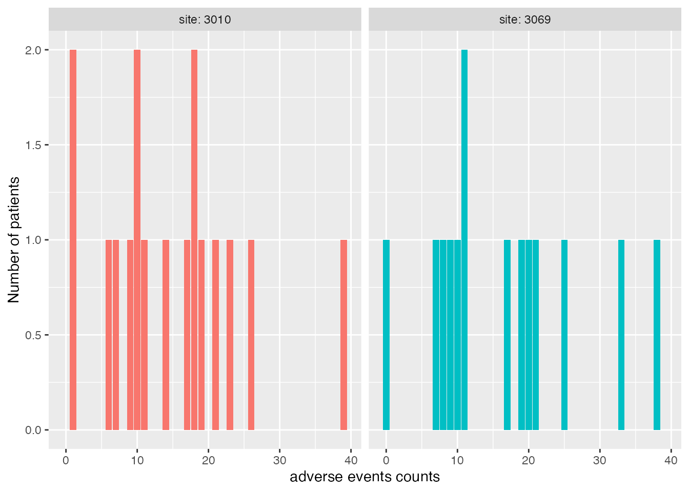
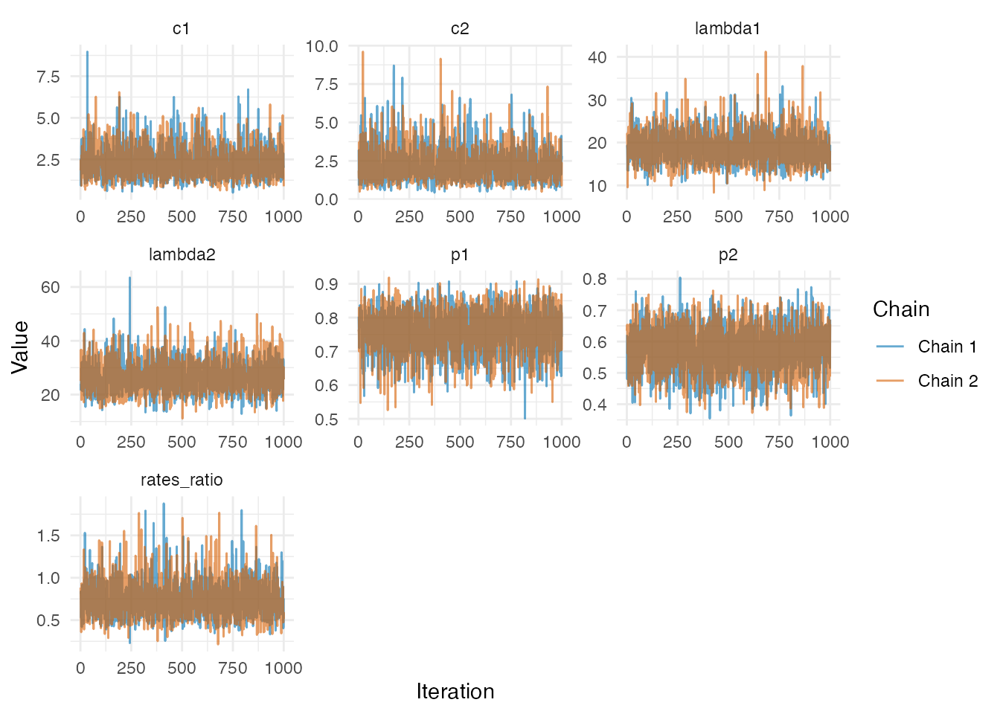
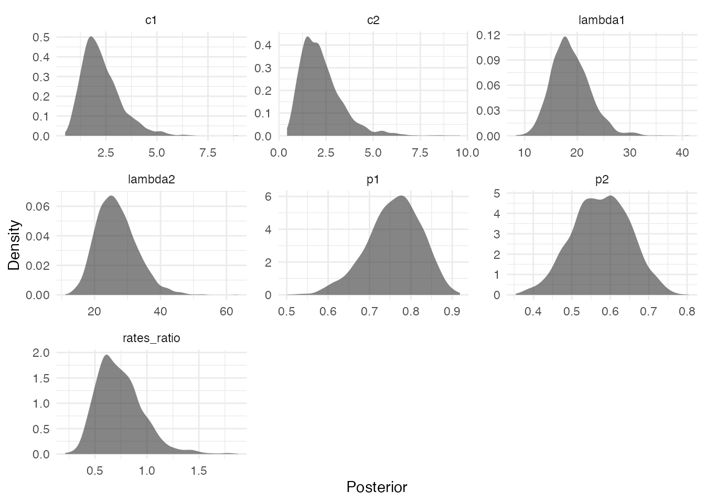

Bayesian Underreported Count Modeling
vignette.RmdBUCM (Bayesian Underreported Count Modeling) is an R package for Bayesian analysis of count data with accounting for potential underreporting. The package provides estimation for one-sample and two-sample Poisson, zero-inflated Poisson (ZIP), and negative binomial models. The package assumes either a validation sub-sample or informative priors are available as additional inputs with the main study data.
BUCM provides estimates for naive models, which assume no underreporting, and underreported models that account for incomplete reporting. Model estimation is performed using Markov chain Monte Carlo (MCMC) methods through JAGS. The package also performs model comparison using DIC, WAIC, and PSIS-LOO in order to determine which of the three count data models fits the observed data the best.
Installation
Install the latest version from Github
# install.packages("pak")
# pak::pkg_install("TheoAnim/BUCM")Illustrative Example
As an example, we simulate data from Poisson subject to underreporting. Assume some validation data through which we know the true (latent) event count denoted by where is the expected (true) count.
For all units, the reported count arises from a binomial mechanism. Conditional on the true count , where denotes the reporting probability.
For the remaining units (the main study sample), only the underreported counts are observed. Marginally, we can derived the distribution of as:
Generate the Data
set.seed(123)
# Simulation settings
lambda <- 5
p <- 0.7
nv <- 100 # Validation sample size
nobs <- 300 # Non-validation sample size
# Validation sample: latent counts (Y*) and observed counts (Y)
ystar <- rpois(nv, lambda = lambda)
yval <- rbinom(nv, size = ystar, prob = p)
# Observed counts subject to underreporting
yobs <- rpois(nobs, lambda = lambda * p)Here, ystar contains the true counts in the validation
sample, yval contains the corresponding reported counts
generated through the binomial reporting mechanism, and
yobs contains the observed counts subject to underreporting
in the main study sample.
data.frame(
y = c(ystar, yval, yobs),
type = c(
rep("ystar", nv),
rep("yval", nv),
rep("yobs", nobs)
)
) |>
ggplot() +
geom_bar(aes(y)) +
facet_grid(~ type) +
labs(
x = "Count",
y = "Frequency"
)
Fit Model
With validation data available, prior specifications can be noninformative, weakly informative or informative.
set.seed(123)
bayes_count_models <- BUCM::urc_mcmc(
x = list(ystar = ystar, yval = yval, yobs = yobs),
prior_p = "dbeta(22, 18)",
prior_lambda = "dgamma(4, 1)",
thresh = 5
)
ls(bayes_count_models)
#> [1] "dic_best" "dics" "loo_best" "loos" "models" "waic_best"
#> [7] "waics"Model Diagnostics
BUCM provides extra diagnostics functions urc_trace,
urc_acf, urc_density and
urc_hist. urc_mcmc also returns the plausible
model if using DIC/WAIC/PSIS-LOO as the model selection method. The
likelihoods are also returned for each model allowing users to compute
and diagnose WAIC and PSIS-LOO methods (Take note of warnings for WAIC
and PSIS-LOO computations, see original loo
documentation).

bayes_count_models$models$poisson |>
BUCM::urc_density(parameters = c("lambda", "p"), alpha = .5)
BUCM is compatible with bayesplot package. Pass array of posterior draws to create trace plots, density, posterior intervals and other diagnostic visualizations. The log-likelihoods are monitored for WAIC and PSIS-LOO computations, so you must explicitly specify the parameters; otherwise, log-likelihoods will be included.
jm_poisson_array <- bayes_count_models$models$poisson$BUGSoutput$sims.array
bayesplot::mcmc_dens(jm_poisson_array, pars = c("lambda", "p"))

Model Selection
Values of each criterion for the three models
# using DIC for model selection
bayes_count_models$dics
#> model_names DIC
#> 1 poisson 1907.629
#> 2 zip 1952.435
#> 3 negbinom 1913.327
# using WAIC for model selection
bayes_count_models$waics
#> model_names waic
#> 1 poisson 1907.194
#> 2 zip 1908.704
#> 3 negbinom 1910.693
# using PSIS-LOO for model selection
bayes_count_models$loos
#> model_names loo
#> 1 poisson 1907.203
#> 2 zip 1903.827
#> 3 negbinom 1910.701Show plausible model selected as being parsimonious or having the smallest criterion value
data.frame(
Model = c("DIC", "WAIC", "LOO"),
"Best Selected" = c(
bayes_count_models$dic_best,
bayes_count_models$waic_best,
bayes_count_models$loo_best
)
)
#> Model Best.Selected
#> 1 DIC poisson
#> 2 WAIC poisson
#> 3 LOO poissonPosterior Summaries
bayes_count_models$models$poisson |>
BUCM::urc_posterior_summary(exclude = c("mu", "deviance"), digits = 2)
#> mean sd 2.5% 50% 97.5% Rhat n.eff
#> lambda 5.00 0.160 4.70 5.00 5.30 1 2000
#> p 0.69 0.017 0.65 0.69 0.72 1 1884Posterior summaries can also be obtained using
MCMCvis.
bayes_count_models$models$poisson |>
MCMCvis::MCMCsummary(params = c("lambda", "p"))
#> mean sd 2.5% 50% 97.5% Rhat n.eff
#> lambda 5.0163106 0.15904592 4.7118912 5.0144230 5.3415684 1 2000
#> p 0.6890235 0.01735544 0.6544488 0.6893771 0.7219655 1 1884Two-Sample Model
For the two-sample setting, we consider two independent Poisson populations with different underlying mean counts and reporting probabilities. No validation data are assumed to be available, so the model is fitted to the two observed underreported samples using informative priors centered on the values used to generate the data.
set.seed(123)
# Simulation settings
lambda1 <- 5
lambda2 <- 8
p1 <- 0.7
p2 <- 0.6
nobs <- 300 # Non-validation sample size
# Observed counts subject to underreporting
yobs1 <- rpois(nobs, lambda = lambda1 * p1)
yobs2 <- rpois(nobs, lambda = lambda2 * p2)Fit the two-sample model without validation data
bayes_two_count_models <- BUCM::urc_two_mcmc(
x = list(
yobs1 = yobs1,
yobs2 = yobs2,
ystar1 = NA,
yval1 = NA,
ystar2 = NA,
yval2 = NA
),
prior_p1 = "dbeta(70, 30)",
prior_p2 = "dbeta(60, 40)",
prior_lambda1 = "dgamma(25, 5)",
prior_lambda2 = "dgamma(32, 4)"
)Output is a list similar to urc_mcmc output. All the
steps(diagnostics, model selection and summary) shown above apply.
ls(bayes_two_count_models)
#> [1] "dic_best" "dics" "loo_best" "loos" "models" "waic_best"
#> [7] "waics"
bayes_two_count_models$models$poisson |> BUCM::urc_trace()
Show plausible model selected as being parsimonious or having the smallest criterion value
data.frame(
Model = c("DIC", "WAIC", "LOO"),
"Best Selected" = c(
bayes_two_count_models$dic_best,
bayes_two_count_models$waic_best,
bayes_two_count_models$loo_best
)
)
#> Model Best.Selected
#> 1 DIC poisson
#> 2 WAIC poisson
#> 3 LOO zipNotice that thresh = 2 is the default and PSIS-LOO identifies the underlying distributions as ZIP. We can inspect the PSIS-LOO values.
bayes_two_count_models$loos
#> model_names loo
#> 1 poisson 2526.654
#> 2 zip 2523.258
#> 3 negbinom 2534.212In this case, it is reasonable to apply the parsimony rule to choose Poisson as the underlying distribution since the PSIS-LOO value is within 4 units of the ZIP value.
Adverse Event Application
We demonstrate the implementation of the package using an adverse event application. We focus on the unequal underreporting scenario presented in the associated article. The implementation for the naive model (i.e., assuming no underreporting) and the equal-reporting model follow similar steps described below.
# load data
ae_data <- readr::read_csv(
"https://raw.githubusercontent.com/ybarmaz/bayesian-ae-reporting/main/data.csv"
)
site_3010_ae <- dplyr::filter(ae_data, site_number == "3010")
site_3069_ae <- dplyr::filter(ae_data, site_number == "3069")Distribution of adverse event counts and the number of patients involved from the top two site
dplyr::bind_rows(
data.frame(ae_events = site_3010_ae$ae_count_cumulative, site = "site: 3010"),
data.frame(ae_events = site_3069_ae$ae_count_cumulative, site = "site: 3069")
) |>
ggplot2::ggplot() +
geom_bar(aes(x = ae_events, fill = site)) +
facet_wrap(~site) +
theme(legend.position = "none") +
labs(x = "adverse events counts", y = "Number of patients")
No validation data, assume informative prior on the two reporting probability.
ae_unequal_reporting <- BUCM::urc_two_mcmc(
x = list(
yobs1 = site_3010_ae$ae_count_cumulative,
ystar1 = NA,
yval1 = NA,
yobs2 = site_3069_ae$ae_count_cumulative,
ystar2 = NA,
yval2 = NA
),
thresh = 2,
prior_p1 = "dbeta(30, 10)",
prior_p2 = "dbeta(22, 18)"
)Verify the selected model under each criterion:
data.frame(
Criterion = c("DIC", "WAIC", "PSIS-LOO"),
`Selected Model` = c(
ae_unequal_reporting$dic_best,
ae_unequal_reporting$waic_best,
ae_unequal_reporting$loo_best
)
)
#> Criterion Selected.Model
#> 1 DIC negbinom
#> 2 WAIC negbinom
#> 3 PSIS-LOO negbinomNegative binomial is suggested as the plausible model. We can check model diagnostics.
ae_unequal_reporting$models$negbinom |> BUCM::urc_trace()
ae_unequal_reporting$models$negbinom |> BUCM::urc_density(alpha = .6)
Finally, we can compute the posterior summaries as follows:
ae_unequal_reporting$models$negbinom |>
BUCM::urc_posterior_summary(digits = 2, exclude = "deviance") |>
kableExtra::kable()| mean | sd | 2.5% | 50% | 97.5% | Rhat | n.eff | |
|---|---|---|---|---|---|---|---|
| c1 | 2.30 | 0.950 | 0.92 | 2.10 | 4.60 | 1.00 | 1907 |
| c2 | 2.30 | 1.100 | 0.80 | 2.00 | 5.20 | 1.00 | 1540 |
| lambda1 | 19.00 | 3.700 | 13.00 | 18.00 | 27.00 | 1.00 | 2051 |
| lambda2 | 27.00 | 6.100 | 17.00 | 26.00 | 40.00 | 1.01 | 1780 |
| p1 | 0.76 | 0.065 | 0.62 | 0.76 | 0.87 | 1.00 | 1729 |
| p2 | 0.58 | 0.074 | 0.43 | 0.58 | 0.72 | 1.00 | 1897 |
| rates_ratio | 0.74 | 0.220 | 0.40 | 0.71 | 1.30 | 1.00 | 2049 |
See the urc_mcmc_naive and
urc_two_mcmc_naive documentation for the required use of
the naive case which assumes no underreporting.